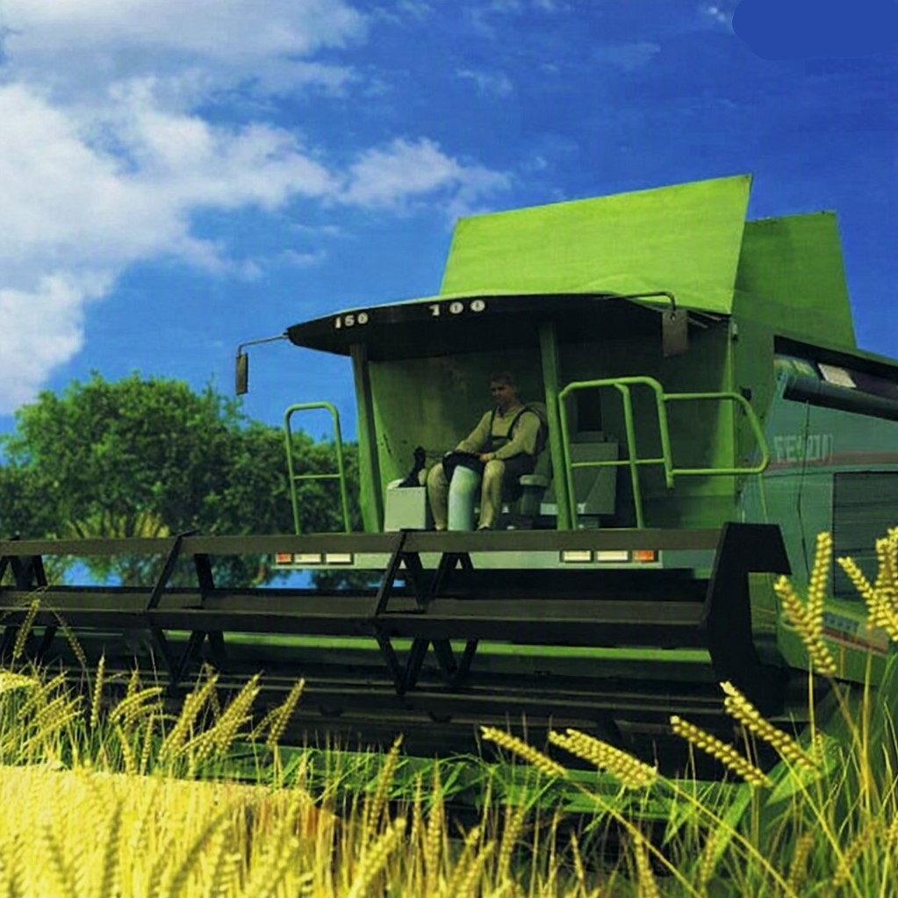
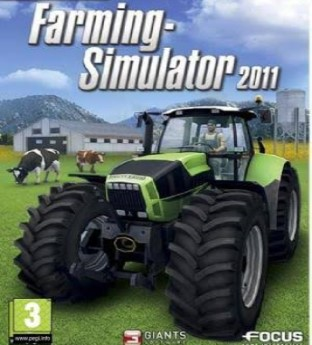
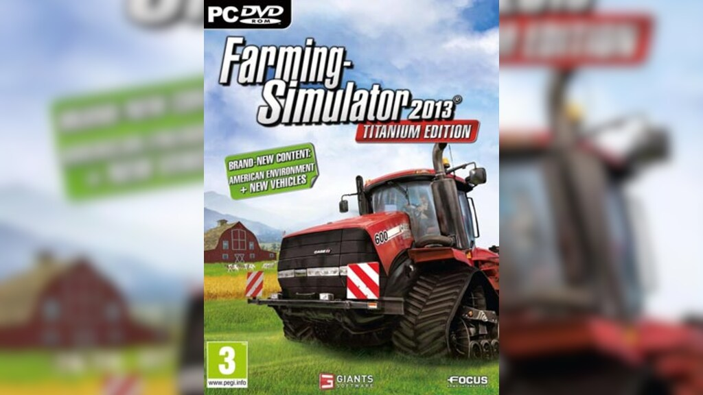

Farming Simulator – Serie completa

Farming Simulator 2008
PC • primo capitolo della serie

Farming Simulator 2011
PC • miglioramenti grafici e gameplay

Farming Simulator 2013
PC / console • salto tecnico importante
Farming Simulator 15
PC / console • legname e nuove mappe
Farming Simulator 17
PC / console • stabile e perfetto per modding
Farming Simulator 19
PC / console • GIANTS Engine 8
Farming Simulator 22
PC / console • stagioni e produzione